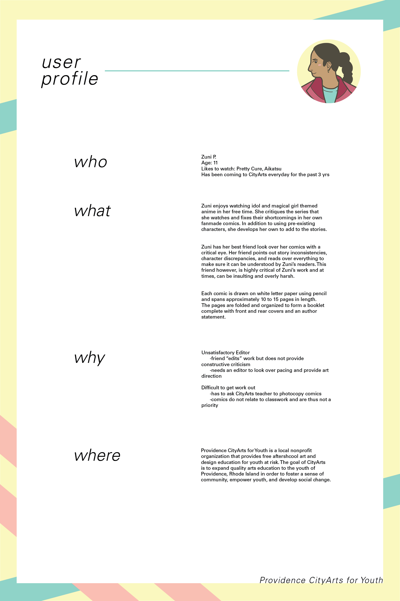

poster design for an interview of a Providence CityArts student
Providence CityArts for Youth is a community-based organization whose mission is to provide free art and design education for at-risk youth. Information was gathered by talking to and getting aquainted with a random student, in this case, Zuni.
Her sheer, unhindered love for magical girl anime and constructive critique on the shows sparked a lengthy, in-depth conversation on her experiences with writing, drawing, and publishing fan-comics of her own. After chatting with her, the user-profile was created as an exercise on layout and visual communication.
The completed laser-printed poster measures 2'x3'.

A color variant of the poster that was eventually scrapped.